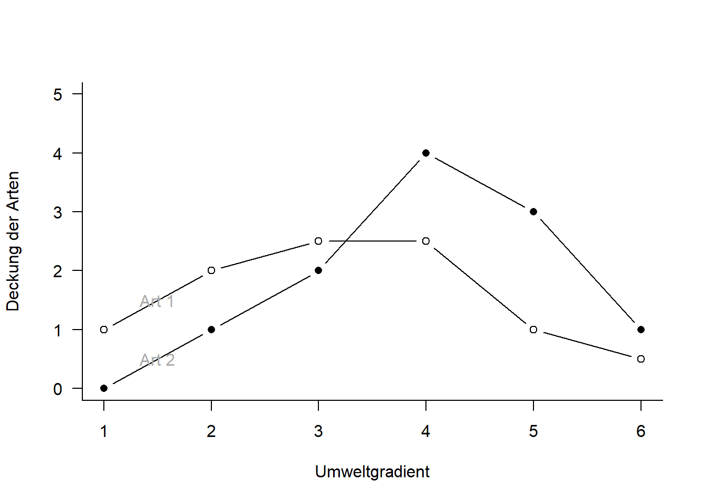
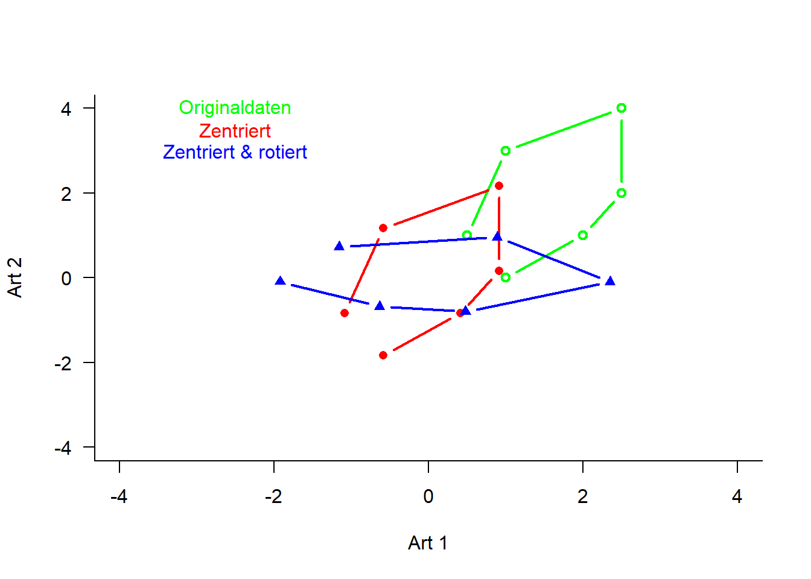
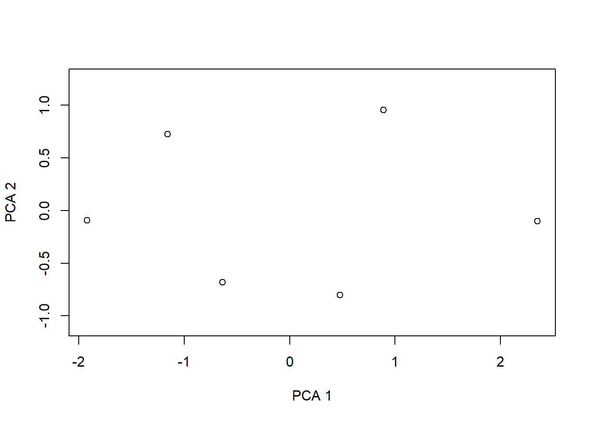

if (!require(labdsv)) {
install.packages("labdsv")
}
library(labdsv)
# Für Ordinationen benötigen wir Matrizen, nicht Dataframes Generieren von
# Daten
raw <- matrix(c(1, 2, 2.5, 2.5, 1, 0.5, 0, 1, 2, 4, 3, 1), nrow = 6)
colnames(raw) <- c("Art1", "Art2")
rownames(raw) <- c("Ort1", "Ort2", "Ort3", "Ort4", "Ort5", "Ort6")
raw
## Art1 Art2
## Ort1 1.0 0
## Ort2 2.0 1
## Ort3 2.5 2
## Ort4 2.5 4
## Ort5 1.0 3
## Ort6 0.5 1
# Originaldaten für Plot separieren
x1 <- raw[, 1]
y1 <- raw[, 2]
z <- c(rep(1:6))
# Plot Abhängigkeit der Arten vom Umweltgradienten
plot(c(x1, y1) ~ c(z, z), type = "n", axes = T, bty = "l", las = 1, xlim = c(1, 6),
ylim = c(0, 5), xlab = "Umweltgradient", ylab = "Deckung der Arten")
points(x1 ~ z, pch = 21, type = "b")
points(y1 ~ z, pch = 16, type = "b")
text(1.5, 1.5, "Art 1", col = "darkgray")
text(1.5, 0.5, "Art 2", col = "darkgray")
# Daten zentrieren d.h. transformieren so, dass Mittelwert = 0
cent <- scale(raw, scale = FALSE)
x2 <- cent[, 1] # für nachfolgenden Plot speichern
y2 <- cent[, 2] # für nachfolgenden Plot speichern
# Daten zusätzlich rotieren PCA zentriert und rotiert Daten
o.pca <- pca(raw)
x3 <- o.pca$scores[, 1] # für nachfolgenden Plot speichern
y3 <- o.pca$scores[, 2] # für nachfolgenden Plot speichern
# Visualisierung der Schritte im Ordinationsraum
plot(c(y1, y2, y3) ~ c(x1, x2, x3), type = "n", axes = T, bty = "l", las = 1, xlim = c(-4,
4), ylim = c(-4, 4), xlab = "Art 1", ylab = "Art 2")
points(y1 ~ x1, pch = 21, type = "b", col = "green", lwd = 2)
text(-2.5, 4, "Originaldaten", col = "green")
points(y2 ~ x2, pch = 16, type = "b", col = "red", lwd = 2)
text(-2.5, 3.5, "Zentriert", col = "red")
points(y3 ~ x3, pch = 17, type = "b", col = "blue", lwd = 2)
text(-2.5, 3, "Zentriert & rotiert", col = "blue")
# Durchführung der PCA
o.pca <- pca(raw)
plot(o.pca)
# Koordinaten im Ordinationsraum
o.pca$scores
## PC1 PC2
## Ort1 -1.9216223 -0.09357697
## Ort2 -0.6353776 -0.68143293
## Ort3 0.4762699 -0.80076373
## Ort4 2.3503705 -0.10237502
## Ort5 0.8895287 0.95400610
## Ort6 -1.1591692 0.72414255
# Korrelationen der Variablen mit den Ordinationsachsen
o.pca$loadings
## PC1 PC2
## Art1 0.3491944 -0.9370503
## Art2 0.9370503 0.3491944
# Erklärte Varianz der Achsen
E <- o.pca$sdev^2/o.pca$totdev * 100
E
## [1] 82.40009 17.59991
# Visualisieren mit prcomp
pca.2 <- prcomp(raw, scale = F)
summary(pca.2)
## Importance of components:
## PC1 PC2
## Standard deviation 1.548 0.7154
## Proportion of Variance 0.824 0.1760
## Cumulative Proportion 0.824 1.0000
plot(pca.2) # 
biplot(pca.2)
# mit vegan
if (!require(vegan)) {
install.packages("vegan")
}
library("vegan")
# Die Funktion rda führt ein PCA aus an wenn nicht Artdaten UND Umweltdaten
# definiert werden
pca.3 <- rda(raw, scale = FALSE)
# scores(pca.3, display = c('sites')) scores(pca.3, display = c('species'))
summary(pca.3, axes = 0)
##
## Call:
## rda(X = raw, scale = FALSE)
##
## Partitioning of variance:
## Inertia Proportion
## Total 2.908 1
## Unconstrained 2.908 1
##
## Eigenvalues, and their contribution to the variance
##
## Importance of components:
## PC1 PC2
## Eigenvalue 2.396 0.5119
## Proportion Explained 0.824 0.1760
## Cumulative Proportion 0.824 1.0000
##
## Scaling 2 for species and site scores
## * Species are scaled proportional to eigenvalues
## * Sites are unscaled: weighted dispersion equal on all dimensions
## * General scaling constant of scores:
biplot(pca.3)